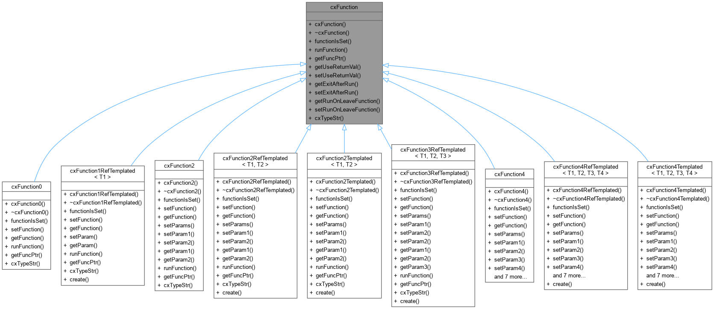
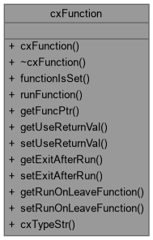

|
cxWidgets 1.0
|
Base class for cxFunction2 and cxFunction4. This class is pure. More...
#include <cxFunction.h>


Public Member Functions | |
| cxFunction (bool pUseReturnVal, bool pExitAfterRun, bool pRunOnLeaveFunction) | |
| Constructor. | |
| virtual | ~cxFunction () |
| virtual bool | functionIsSet () const =0 |
| virtual std::string | runFunction () const =0 |
| Runs the function pointed to by the cxFunction. This is a. | |
| virtual void * | getFuncPtr () const =0 |
| virtual bool | getUseReturnVal () const |
| Accessor for whether the caller should use the return value. | |
| virtual void | setUseReturnVal (bool pUseReturnVal) |
| Setter for whether or not the caller should make use of the return value. | |
| virtual bool | getExitAfterRun () const |
| Accessor for whether the caller should exit after the function. | |
| virtual void | setExitAfterRun (bool pExitAfterRun) |
| Setter for whether or not the caller should quit what. | |
| virtual bool | getRunOnLeaveFunction () const |
| Accessor for whether the caller should run its onLeave function. | |
| virtual void | setRunOnLeaveFunction (bool pRunOnLeaveFunction) |
| Setter for whether or not the caller should run its. | |
| virtual std::string | cxTypeStr () const =0 |
| Returns the name of the class (either "cxFunction2". | |
Base class for cxFunction2 and cxFunction4. This class is pure.
virtual, and this can be used in collections where a set of
cxFunction2 and/or cxFunction4 objects are needed.
| cxFunction::cxFunction | ( | bool | pUseReturnVal, |
| bool | pExitAfterRun, | ||
| bool | pRunOnLeaveFunction | ||
| ) |
Constructor.
| pUseReturnVal | Whether or not the caller should use the return value of the function |
| pExitAfterRun | Whether or not the caller should exit after the function is run |
| pRunOnLeaveFunction | Whether or not the caller should run its onLeave function after the function runs (if pExitAfterRun is true) |
|
virtual |
|
pure virtual |
Returns the name of the class (either "cxFunction2".
or "cxFunction4", depending on the derived implementation).
Implemented in cxFunction0, cxFunction2, cxFunction4, cxFunction2Templated< T1, T2 >, cxFunction1RefTemplated< T1 >, cxFunction2RefTemplated< T1, T2 >, cxFunction3RefTemplated< T1, T2, T3 >, cxFunction4Templated< T1, T2, T3, T4 >, and cxFunction4RefTemplated< T1, T2, T3, T4 >.
|
pure virtual |
Returns whether the internal function pointer is set (non-null).
Implemented in cxFunction0, cxFunction2, cxFunction4, cxFunction2Templated< T1, T2 >, cxFunction1RefTemplated< T1 >, cxFunction2RefTemplated< T1, T2 >, cxFunction3RefTemplated< T1, T2, T3 >, cxFunction4Templated< T1, T2, T3, T4 >, and cxFunction4RefTemplated< T1, T2, T3, T4 >.
|
virtual |
Accessor for whether the caller should exit after the function.
is run.
|
pure virtual |
|
virtual |
Accessor for whether the caller should run its onLeave function.
after the function is run (if exitAfterRun is true).
|
virtual |
Accessor for whether the caller should use the return value.
of the function.
|
pure virtual |
Runs the function pointed to by the cxFunction. This is a.
pure virtual method and must be overridden in deriving classes.
Implemented in cxFunction0, cxFunction2, cxFunction4, cxFunction2Templated< T1, T2 >, cxFunction1RefTemplated< T1 >, cxFunction2RefTemplated< T1, T2 >, cxFunction3RefTemplated< T1, T2, T3 >, cxFunction4Templated< T1, T2, T3, T4 >, and cxFunction4RefTemplated< T1, T2, T3, T4 >.
|
virtual |
Setter for whether or not the caller should quit what.
it's doing (i.e., input loops, etc.) after the function is run.
| pExitAfterRun | Whether or nto the caller should quit what it's doing after the function is run. |
|
virtual |
Setter for whether or not the caller should run its.
onLeave function when it exits after running the function.
This is useful if mExitAfterRun is true.
| pRunOnLeaveFunction | Whether or not the caller should run its onLeave function when it exits after running the function. |
|
virtual |
Setter for whether or not the caller should make use of the return value.
| pUseReturnVal | Whether or nto the caller should make use of the return value |